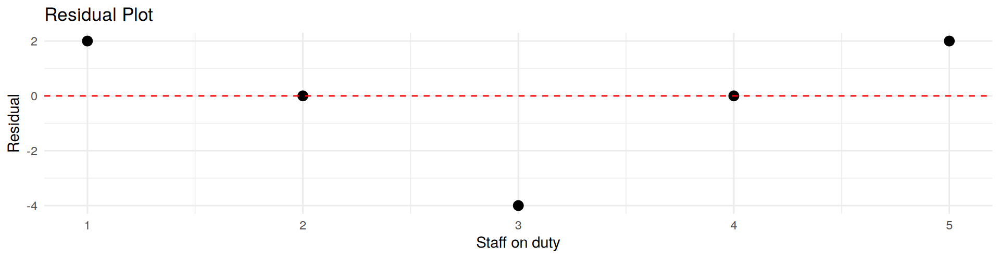

ad_spend <- c(20, 30, 40, 50, 60, 70)
orders <- c(200, 180, 235, 265, 270, 350)
scatter_ads <- ggplot(data.frame(ad_spend, orders),
aes(x = ad_spend, y = orders)) +
geom_point(size = 3, color = "steelblue") +
labs(title = "Advertising Spend and Orders",
x = "Ad spend (thousand NT dollars)", y = "Orders") +
theme_minimal()Statistics
Chapter 10: Correlation and Regression
Yu-You Liou
Shih Chien University
2026-09-20
Overview
Chapter 10 is about correlation and regression — whether two variables are linearly related, how strong the relation is, and how to predict.
| Section | Topics |
|---|---|
| 10-1 | Scatter plots; the correlation coefficient r and its properties; testing H_0: \rho = 0; correlation vs. causation |
| 10-2 | Regression line y' = a + bx; least squares and residuals; marginal change; extrapolation; influential points |
Overview (continued)
| Section | Topics |
|---|---|
| 10-3 | Types of variation; residual plots; r^2; s_{est}; prediction intervals |
| 10-4 | Multiple regression; partial coefficients; R, the F test, adjusted R^2 |
Chapter Objectives
After completing this chapter, you should be able to
- Draw a scatter plot for a set of ordered pairs.
- Compute the correlation coefficient.
- Test the hypothesis H_0: \rho = 0.
- Compute the equation of the regression line.
- Compute the coefficient of determination.
- Compute the standard error of the estimate.
- Find a prediction interval.
- Be familiar with the concept of multiple regression.
Four Questions This Chapter Answers
Correlation and regression analysis are part of inferential statistics: they decide whether a relationship exists between two or more numerical variables and describe it.
The Purpose of the Chapter
- Are two or more variables linearly related?
- If so, what is the strength of the relationship?
- What type of relationship exists?
- What kind of predictions can be made from the relationship?
Section 10-1: Scatter Plots and Correlation
Independent and Dependent Variables
In simple correlation and regression studies, the researcher collects data on two numerical (quantitative) variables to see whether a relationship exists between them.
Independent and Dependent Variables
The independent variable is the variable in regression that can be controlled or manipulated; it is designated x and is also called the explanatory variable.
The dependent variable is the variable in regression that cannot be controlled or manipulated; it is designated y and is also called the response variable.
The choice of x and y is not always clear-cut. Age can reasonably be taken to affect blood pressure, but for the attitudes of husbands and wives on the same issue the researcher may assign the roles arbitrarily.
Scatter Plots
Scatter Plot
A scatter plot is a graph of the ordered pairs (x, y) of numbers consisting of the independent variable x and the dependent variable y.
The independent variable x is plotted on the horizontal axis and the dependent variable y on the vertical axis. The scales of the two variables may differ; the coordinates of the axes are set by the smallest and largest data values.
Types of Relationships
Researchers look for patterns in a scatter plot (Figure 10-1).
Four Patterns
- Positive linear relationship — as x increases, y increases; the points form roughly a straight line rising from left to right.
- Negative linear relationship — as x increases, y decreases; the points form roughly a straight line falling from left to right.
- Curvilinear (nonlinear) relationship — the points follow a curve.
- No relationship — no line or curve can be seen in the points.
Procedure Table: Drawing a Scatter Plot
Drawing a Scatter Plot
Step 1 Draw and label the x and y axes.
Step 2 Plot each point on the graph.
Step 3 Determine the type of relationship (if any) that exists for the variables.
Example 10-1
Advertising Spend and Orders
A cross-border e-commerce team records, for six of its product lines, last month’s online advertising spend (in thousands of NT dollars) and the number of orders received. Construct a scatter plot for the data.
Ad spend, x 20 30 40 50 60 70
Orders, y 200 180 235 265 270 350(hypothetical data)
Back to Example 10-4
Example 10-1
Solution
Step 1 — draw and label the axes; Step 2 — plot each point
Example 10-1
Example 10-2
Days Late and Customer Rating
A freight forwarder in Taichung reviews seven export orders that reached the buyer after the promised date. For each order it records how many days late the shipment was and the satisfaction rating (out of 100) the customer gave afterwards. Construct a scatter plot for the data.
Order A B C D E F G
Days late, x 1 2 3 4 5 6 7
Customer rating, y 94 84 86 80 78 68 70(hypothetical data)
Back to Example 10-5
Example 10-2
Solution
Step 1 — draw and label the axes; Step 2 — plot each point
days_late <- c(1, 2, 3, 4, 5, 6, 7)
rating <- c(94, 84, 86, 80, 78, 68, 70)
scatter_rating <- ggplot(data.frame(days_late, rating),
aes(x = days_late, y = rating)) +
geom_point(size = 3, color = "tomato") +
labs(title = "Days Late and Customer Rating",
x = "Days late", y = "Customer rating") +
theme_minimal()Example 10-2
Example 10-3
Years in Operation and Order Growth
A trade association wishes to see whether there is a relationship between how long a small trading company has been in operation and how fast its orders grew last year. Seven member companies in Kaohsiung are selected. Construct a scatter plot for the data.
Company A B C D E F G
Years in operation, x 2 4 6 8 10 12 14
Order growth, y (%) 9 12 7 8 10 9 11(hypothetical data)
Back to Example 10-6
Example 10-3
Solution
Step 1 — draw and label the axes; Step 2 — plot each point
years_operating <- c(2, 4, 6, 8, 10, 12, 14)
growth_rate <- c(9, 12, 7, 8, 10, 9, 11)
scatter_growth <- ggplot(data.frame(years_operating, growth_rate),
aes(x = years_operating, y = growth_rate)) +
geom_point(size = 3, color = "purple") +
labs(title = "Years in Operation and Order Growth",
x = "Years in operation", y = "Order growth (%)") +
theme_minimal()Example 10-3
Correlation
Statisticians use a measure called the correlation coefficient to determine the strength of the linear relationship between two variables. There are several types of correlation coefficients.
Population and Sample Correlation Coefficients
The population correlation coefficient, denoted by the Greek letter \rho, is the correlation computed by using all possible pairs of data values (x, y) taken from a population.
The linear correlation coefficient computed from the sample data measures the strength and direction of a linear relationship between two quantitative variables. The symbol for the sample correlation coefficient is r.
The correlation coefficient of this section is the Pearson product moment correlation coefficient (PPMC), named after Karl Pearson.
Range of Values for r
Interpreting the Value of r (Figure 10-5)
The range of the linear correlation coefficient is from -1 to +1.
- r close to +1: a strong positive linear relationship.
- r close to -1: a strong negative linear relationship.
- r close to 0: no linear relationship or only a weak one.
A value of r equal to or close to 0 implies only that there is no linear relationship; the data may still be related in some other, nonlinear way.
Properties of the Linear Correlation Coefficient
Five Properties
- The correlation coefficient is a unitless measure.
- The value of r will always be between -1 and +1 inclusively, that is, -1 \leq r \leq 1.
- If the values of x and y are interchanged, the value of r will be unchanged.
- If the values of x and/or y are converted to a different scale, the value of r will be unchanged.
- The value of r is sensitive to outliers and can change dramatically if they are present in the data.
Assumptions for the Correlation Coefficient
Three Assumptions
- The sample is a random sample.
- The data pairs fall approximately on a straight line and are measured at the interval or ratio level.
- The variables have a bivariate normal distribution: given any specific value of x, the y values are normally distributed; and given any specific value of y, the x values are normally distributed.
In this book the assumptions are assumed to be met in the exercises; in other situations you must check them before proceeding.
Formula for the Linear Correlation Coefficient
Formula and Rounding Rule
r = \frac{n(\sum xy) - (\sum x)(\sum y)}{\sqrt{[n(\sum x^2) - (\sum x)^2][n(\sum y^2) - (\sum y)^2]}}
where n is the number of data pairs.
Rounding Rule for the Correlation Coefficient. Round the value of r to three decimal places.
Procedure Table: Finding the Value of r
Finding the Value of the Linear Correlation Coefficient
Step 1 Make a table with columns x, y, xy, x^2, y^2.
Step 2 Place the values of x and y in the first two columns. Multiply each x value by the corresponding y value and place the products in the xy column. Square each x value and each y value and place them in the x^2 and y^2 columns. Find the sum of each column.
Step 3 Substitute in the formula and find the value for r.
Example 10-4
Advertising Spend and Orders
Compute the linear correlation coefficient for the data in Example 10-1.
Back to Example 10-9
Example 10-4
Solution
Steps 1 and 2 — make the table and sum each column
| Ad spend, x | Orders, y | xy | x^2 | y^2 |
|---|---|---|---|---|
| 20 | 200 | 4,000 | 400 | 40,000 |
| 30 | 180 | 5,400 | 900 | 32,400 |
| 40 | 235 | 9,400 | 1,600 | 55,225 |
| 50 | 265 | 13,250 | 2,500 | 70,225 |
| 60 | 270 | 16,200 | 3,600 | 72,900 |
| 70 | 350 | 24,500 | 4,900 | 122,500 |
| \sum x = 270 | \sum y = 1500 | \sum xy = 72{,}750 | \sum x^2 = 13{,}900 | \sum y^2 = 393{,}250 |
Example 10-4
Solution
Step 3 — substitute in the formula and solve for r
r = \frac{6(72{,}750) - (270)(1500)}{\sqrt{[6(13{,}900) - 270^2][6(393{,}250) - 1500^2]}} = \frac{31{,}500}{33{,}907.96} = 0.929
The value of r suggests a strong positive linear relationship between advertising spend and the number of orders: the more a product line spends on advertising, the more orders it takes.
Example 10-4
Example 10-5
Days Late and Customer Rating
Compute the value of the linear correlation coefficient for the data on the seven late export orders given in Example 10-2.
Back to Example 10-10
Example 10-5
Solution
Steps 1 and 2 — make the table and sum each column
| Order | Days late, x | Rating, y | xy | x^2 | y^2 |
|---|---|---|---|---|---|
| A | 1 | 94 | 94 | 1 | 8,836 |
| B | 2 | 84 | 168 | 4 | 7,056 |
| C | 3 | 86 | 258 | 9 | 7,396 |
| D | 4 | 80 | 320 | 16 | 6,400 |
| E | 5 | 78 | 390 | 25 | 6,084 |
| F | 6 | 68 | 408 | 36 | 4,624 |
| G | 7 | 70 | 490 | 49 | 4,900 |
| \sum x = 28 | \sum y = 560 | \sum xy = 2128 | \sum x^2 = 140 | \sum y^2 = 45{,}296 |
Example 10-5
Solution
Step 3 — substitute in the formula and solve for r
r = \frac{7(2128) - (28)(560)}{\sqrt{[7(140) - 28^2][7(45{,}296) - 560^2]}} = \frac{-784}{824.93} = -0.950
The value of r suggests a strong negative linear relationship: the later a shipment arrives, the lower the rating the customer gives.
Example 10-6
Years in Operation and Order Growth
Compute the value of the correlation coefficient for the data given in Example 10-3 for the years in operation and the order growth of the seven trading companies.
Back to Example 10-8
Example 10-6
Solution
Steps 1 and 2 — make the table and sum each column
| Company | Years, x | Growth, y | xy | x^2 | y^2 |
|---|---|---|---|---|---|
| A | 2 | 9 | 18 | 4 | 81 |
| B | 4 | 12 | 48 | 16 | 144 |
| C | 6 | 7 | 42 | 36 | 49 |
| D | 8 | 8 | 64 | 64 | 64 |
| E | 10 | 10 | 100 | 100 | 100 |
| F | 12 | 9 | 108 | 144 | 81 |
| G | 14 | 11 | 154 | 196 | 121 |
| \sum x = 56 | \sum y = 66 | \sum xy = 534 | \sum x^2 = 560 | \sum y^2 = 640 |
Example 10-6
Solution
Step 3 — substitute in the formula and solve for r
r = \frac{7(534) - (56)(66)}{\sqrt{[7(560) - 56^2][7(640) - 66^2]}} = \frac{42}{311.79} = 0.135
The value of r indicates a very weak positive linear relationship between the years a company has been in operation and its order growth.
The Significance of the Correlation Coefficient
Since r is computed from sample data, there are two possibilities when r is not zero: either r is high enough to conclude that a significant linear relationship exists, or the value of r is due to chance.
Traditional Method — Five Steps
Step 1 State the hypotheses.
Step 2 Find the critical values.
Step 3 Compute the test statistic.
Step 4 Make the decision.
Step 5 Summarize the results.
Assumptions for Testing the Significance of r
Four Assumptions
- The data are quantitative and are obtained from a simple random sample.
- The scatter plot shows that the data are approximately linearly related.
- There are no outliers in the data.
- The variables x and y must come from normally distributed populations.
The Hypotheses
H_0 and H_1
H_0: \rho = 0 \qquad H_1: \rho \neq 0
H_0 means that there is no correlation between the x and y variables in the population. H_1 means that there is a significant correlation between the variables in the population.
You do not have to identify the claim here, since the question will always be whether there is a significant linear relationship between the variables.
When H_0 is rejected, r differs significantly from 0; when H_0 is not rejected, r is probably due to chance.
The t Test for the Correlation Coefficient
Formula for the t Test for the Correlation Coefficient
t = r \sqrt{\frac{n-2}{1-r^2}}
with degrees of freedom equal to n - 2, where n is the number of ordered pairs (x, y).
The two-tailed critical values are used; they are found in Table A-5. Both variables x and y must come from normally distributed populations.
Example 10-7
Testing the Significance of r
Test the significance of the correlation coefficient found in Example 10-4. Use \alpha = 0.05 and r = 0.929.
Example 10-7
Solution
Step 1 State the hypotheses: H_0: \rho = 0 and H_1: \rho \neq 0.
Step 2 Find the critical values. Since \alpha = 0.05 and there are 6 - 2 = 4 degrees of freedom, the critical values from Table A-5 are \pm 2.776 (Figure 10-7).
Step 3 Compute the test statistic.
t = r \sqrt{\frac{n-2}{1-r^2}} = 0.929\sqrt{\frac{6-2}{1-(0.929)^2}} = 5.02
Step 4 Make the decision: reject the null hypothesis, since the test statistic falls in the critical region (Figure 10-8).
Step 5 Summarize the results: there is a significant relationship between advertising spend and the number of orders.
Example 10-7
Solution
Compute in R
t p_value
5.0200 0.0074 [1] -2.776 2.776cor.test() gives t = 5.02 with a P-value of 0.0074, and the two-tailed critical values from Table A-5 are \pm 2.776.
The P-Value Method
Five Steps
Step 1 State the hypotheses.
Step 2 Find the test statistic (here, the t test).
Step 3 Find the P-value (here, use Table A-5).
Step 4 Make the decision.
Step 5 Summarize the results.
For the test in Example 10-7, t = 5.02 with \text{d.f.} = 4. In the Two tails row of Table A-5 the entry at \alpha = 0.01 for \text{d.f.} = 4 is 4.604, and 5.02 > 4.604, so the P-value is less than 0.01; cor.test() gives 0.0074. Since P-value < 0.05, reject H_0.
Using Table A-8
Critical Values for the PPMC
Table A-8 gives the values of the correlation coefficient that are significant for a specific \alpha level and a specific number of degrees of freedom. For \text{d.f.} = 7 and \alpha = 0.05 the table gives 0.666: any value of r greater than +0.666 or less than -0.666 is significant, and H_0 is rejected (Figure 10-9).
When Table A-8 is used, you need not compute the t test statistic. Table A-8 is for two-tailed tests only.
Example 10-8
Using Table A-8
Using Table A-8, test the significance at \alpha = 0.05 of the correlation coefficient r = 0.135 obtained in Example 10-6.
Example 10-8
Solution
H_0: \rho = 0 \qquad H_1: \rho \neq 0
The critical values from Table A-8 at \alpha = 0.05 with 5 degrees of freedom are \pm 0.754. Since 0.135 < 0.754, the decision is do not reject the null hypothesis (Figure 10-10).
Hence, there is not enough evidence to say that there is a significant relationship between the number of years a company has been in operation and its order growth. (Note: the P-value is 0.7734.)
Example 10-8
One-Tailed Tests
One-Tailed Hypotheses
Significance tests for correlation coefficients are generally two-tailed, but they can be one-tailed. For a hypothesized positive linear relationship,
H_0: \rho = 0 \qquad H_1: \rho > 0
and for a hypothesized negative linear relationship,
H_0: \rho = 0 \qquad H_1: \rho < 0
In these cases the t test and the P-value test are one-tailed, and one-tailed versions of Table A-8 exist. In this book the examples and exercises involve two-tailed tests.
Correlation and Causation
Possible Relationships Between Variables
When H_0 has been rejected for a specific \alpha value, any of the following five possibilities can exist.
- There is a direct cause-and-effect relationship: x causes y (water causes plants to grow, heat causes ice to melt).
- There is a reverse cause-and-effect relationship: y causes x (an extremely nervous person may crave coffee, rather than coffee causing nervousness).
- The relationship may be caused by a third variable (drowning deaths and soft-drink sales are both related to heat and humidity).
- There may be a complexity of interrelationships among many variables (high school and college grades are also tied to IQ, hours of study, motivation, age, instructors).
- The relationship may be coincidental (the rise in the number of people exercising and the rise in the number of people committing crimes).
Caution: Lurking Variables and Averages
Caution
A third variable that is unknown to the researcher or not accounted for in the study is called a lurking variable. The researcher should try to identify such variables and control their influence.
Even if the correlation between two variables is high, it does not necessarily mean causation.
Be cautious when the data for one or both variables are averages rather than individual data. Using averages is not wrong, but the results cannot be generalized to individuals, since averaging smooths out the variability among individual values and can produce a higher correlation than actually exists.
Section 10-2: Regression
Line of Best Fit
If the value of the correlation coefficient is significant, the next step is to determine the equation of the regression line, the data’s line of best fit.
Best Fit, Residuals and Least Squares
Best fit means that the sum of the squares of the vertical distances from each point to the line is at a minimum.
The difference between the actual value y and the predicted value y' (the vertical distance) is called a residual or a predicted error.
The method used for making the residuals as small as possible is the method of least squares; the regression line is therefore also called the least squares regression line.
Determining the regression line when r is not significant, and then making predictions with it, is meaningless.
Determination of the Regression Line Equation
Algebra Versus Statistics (Figure 10-13)
In algebra the equation of a line is written y = mx + b, where m is the slope and b is the y intercept.
In statistics the equation of the regression line is written
y' = a + bx
where a is the y' intercept and b is the slope of the line.
When r is positive the line slopes upward to the right; when r is negative it slopes downward from left to right.
Formulas for the Regression Line
Formulas for the Regression Line y' = a + bx
a = \frac{(\sum y)(\sum x^2) - (\sum x)(\sum xy)}{n(\sum x^2) - (\sum x)^2}
b = \frac{n(\sum xy) - (\sum x)(\sum y)}{n(\sum x^2) - (\sum x)^2}
where a is the y' intercept and b is the slope of the line.
Rounding Rule for the Intercept and Slope. Round the values of a and b to three decimal places.
Procedure Table: Finding the Regression Line Equation
Finding the Regression Line Equation
Step 1 Make a table with columns x, y, xy, x^2, y^2.
Step 2 Find the values of xy, x^2 and y^2, place them in the appropriate columns and sum each column.
Step 3 When r is significant, substitute in the formulas to find the values of a and b for the regression line equation y' = a + bx.
Example 10-9
Advertising Spend and Orders
Find the equation of the regression line for the data in Example 10-4, and graph the line on the scatter plot of the data.
Example 10-9
Solution
The values needed are n = 6, \sum x = 270, \sum y = 1500, \sum xy = 72{,}750, \sum x^2 = 13{,}900.
a = \frac{(1500)(13{,}900) - (270)(72{,}750)}{6(13{,}900) - 270^2} = \frac{1{,}207{,}500}{10{,}500} = 115
b = \frac{6(72{,}750) - (270)(1500)}{6(13{,}900) - 270^2} = \frac{31{,}500}{10{,}500} = 3
Hence the equation of the regression line is
y' = 115 + 3x
Example 10-9
Solution
Compute in R. The two formulas above are worth writing out once; everywhere else lm() does the work.
a b
115 3 (Intercept) ad_spend
115 3 Example 10-9
Example 10-10
Days Late and Customer Rating
Find the equation of the regression line for the data in Example 10-5, and graph the line on the scatter plot.
Back to Example 10-11
Example 10-10
Solution
The values needed are n = 7, \sum x = 28, \sum y = 560, \sum xy = 2128, \sum x^2 = 140.
a = \frac{(560)(140) - (28)(2128)}{7(140) - 28^2} = \frac{18{,}816}{196} = 96
b = \frac{7(2128) - (28)(560)}{7(140) - 28^2} = \frac{-784}{196} = -4
Hence the equation of the regression line is
y' = 96 - 4x
Example 10-10
Solution
Properties of the Regression Line
Two Properties
The sign of the correlation coefficient and the sign of the slope of the regression line are always the same: if r is positive, b is positive; if r is negative, b is negative. The numerators of the two formulas are identical and the denominators are always positive.
The regression line always passes through the point (\bar{x}, \bar{y}), whose coordinates are the mean of the x values and the mean of the y values.
Guidelines for Making Predictions
Use These Guidelines
- The points of the scatter plot fit the linear regression line reasonably well.
- The value of r is significant.
- The value of a specific x is not much beyond the observed x values in the original data.
- If r is not significant, then the best predicted value for a specific x value is the mean of the y values in the original data.
Assumptions for Valid Predictions in Regression
Three Assumptions (Figure 10-16)
- The sample is a random sample.
- For any specific value of the independent variable x, the value of the dependent variable y must be normally distributed about the regression line.
- The standard deviation of each of the dependent variables must be the same for each value of the independent variable, that is, \sigma_1 = \sigma_2 = \cdots = \sigma_n.
Example 10-11
Days Late and Customer Rating
Use the equation of the regression line in Example 10-10 to predict the customer rating for an order that arrives 2 days late.
Example 10-11
Solution
Substitute 2 for x in the regression line equation y' = 96 - 4x:
y' = 96 - 4(2) = 88
Hence, an order that arrives 2 days late is predicted to receive a customer rating of about 88. This is a point prediction: no degree of accuracy or confidence can be attached to it (see Section 10-3).
Marginal Change
Marginal Change
The magnitude of the change in one variable when the other variable changes exactly 1 unit is called a marginal change. The value of the slope b of the regression line equation represents the marginal change.
In Example 10-10, b = -4: for each additional day a shipment is late, the predicted customer rating falls by 4 points, on average.
Caution: Extrapolation
Caution
Extrapolation, or making predictions beyond the bounds of the data, must be interpreted cautiously.
Suppose the regression of monthly revenue on store floor area is fitted from branches of 8 to 18 ping. Using that line to predict the revenue of a 60-ping flagship store assumes the same straight-line relationship holds far outside the range that was measured. It usually does not: a store that large draws on a different catchment, carries a different product mix, and faces costs the sample never saw.
Predictions are based on present conditions or on the premise that present trends will continue. That assumption may or may not prove true in the future.
Outliers and Influential Points
Influential Points
A scatter plot should be checked for outliers: points that seem out of place compared with the other points. Outliers that affect the equation of the regression line are called influential points (or influential observations).
An influential point tends to “pull” the regression line toward itself. To check, graph the regression line with the point and then without it; if the position of the line changes considerably, the point is influential. Points that are outliers in the x direction tend to be influential.
Researchers use their judgment about whether to include influential observations, or collect additional data near that x value.
Section 10-3: Coefficient of Determination and Standard Error of the Estimate
Types of Variation for the Regression Model
Consider a small set of five observations (hypothetical data): x is the number of staff on duty at a night-market stall and y is the number of set meals sold per hour. Its regression equation is y' = 8 + 4x and r = 0.933.
x 1 2 3 4 5
y 14 16 16 24 30Three Types of Variation
The total variation \sum(y - \bar{y})^2 is the sum of the squares of the vertical distances each point is from the mean. It divides into two parts.
The explained variation \sum(y' - \bar{y})^2 is the variation obtained from the relationship, that is, from the predicted y' values.
The unexplained variation \sum(y - y')^2 is the variation due to chance; it cannot be attributed to the relationship.
\sum(y - \bar{y})^2 = \sum(y' - \bar{y})^2 + \sum(y - y')^2
Types of Variation in R
total explained unexplained
184 160 24 Total variation = 184, explained variation = 160, unexplained variation = 24, and 184 = 160 + 24.
Residual Plots
Residual Plot
The values y - y' are called residuals (sometimes the prediction errors). These values can be plotted against the x values, and the plot, called a residual plot, can be used to determine how well the regression line can be used to make predictions.
The x values are plotted on the horizontal axis and the residuals on the vertical axis. Since the mean of the residuals is always zero, a horizontal line at 0 is drawn on the plot.
x 1 2 3 4 5
y - y' 2 0 -4 0 2Residual Plot in R

Interpreting a Residual Plot
Four Patterns (Figure 10-19)
- (a) The residual values are more or less evenly distributed about the line: the relationship between x and y is linear and the regression line can be used to make predictions. This is the homoscedasticity assumption — the standard deviations of each of the dependent variables are the same for each value of the independent variable.
- (b) The variance of the residuals increases as x increases: the regression line is not suitable for predictions.
- (c) A curvilinear relationship between the x values and the residual values: the regression line is not suitable for predictions.
- (d) As x increases, the residuals increase and become more dispersed: the regression line is not suitable for predictions.
The residual plot for y' = 8 + 4x makes that line somewhat questionable for predictions, due to the small sample size.
Coefficient of Determination
Coefficient of Determination
The coefficient of determination is the ratio of the explained variation to the total variation, denoted by r^2:
r^2 = \frac{\text{explained variation}}{\text{total variation}}
It measures the variation of the dependent variable that is explained by the regression line and the independent variable, and 0 \leq r^2 \leq 1.
For the stall data, r^2 = 160 / 184 = 0.870: 87.0\% of the total variation is explained by the regression line. Squaring r = 0.933 gives the same value.
Coefficient of Nondetermination
Coefficient of Nondetermination
1.00 - r^2
If r = 0.90, then r^2 = 0.81, so 81\% of the variation in the dependent variable is accounted for by the variation in the independent variable, and the remaining 0.19, or 19\%, is unexplained.
As r approaches 0, r^2 decreases more rapidly: if r = 0.6, then r^2 = 0.36, so only 36\% of the variation is attributable to the independent variable.
Coefficient of Determination in R
r r_squared nondetermination
-0.950 0.903 0.097 In Example 10-5, r = -0.950, so r^2 = 0.903: about 90.3\% of the variation in the customer ratings can be explained by the linear relationship with the number of days late, and about 9.7\% cannot.
Prediction Interval and Standard Error of the Estimate
A point prediction gives no information about how accurate it is. The interval estimate used in regression is the prediction interval.
Two Definitions
A prediction interval is an interval estimate of a predicted value of y when the regression equation is used and a specific value of x is given.
The standard error of the estimate, denoted by s_{est}, is the standard deviation of the observed y values about the predicted y' values:
s_{est} = \sqrt{\frac{\sum(y - y')^2}{n-2}}
s_{est} is the square root of the unexplained variation divided by n - 2: the closer the observed values are to the predicted values, the smaller it is.
Procedure Table: Finding s_{est}
Finding the Standard Error of the Estimate
Step 1 Make a table with columns x, y, y', y - y', (y - y')^2.
Step 2 Find the predicted values y' for each x value and place them under y'.
Step 3 Subtract each y' value from each y value and place the answers in the y - y' column.
Step 4 Square each of the values in Step 3 and place them in the (y - y')^2 column.
Step 5 Find the sum of the values in the (y - y')^2 column.
Step 6 Substitute in the formula and find s_{est}.
Example 10-12
Store Floor Area and Monthly Revenue
A retail analyst collects the following data for six branches of a bubble-tea chain and determines that there is a significant relationship between a store’s floor area and its average monthly revenue. The regression equation is y' = 25 + 5x. Find the standard error of the estimate.
Branch A B C D E F
Floor area, x (ping) 8 10 12 14 16 18
Monthly revenue, y (NT$10,000) 70 75 80 90 105 120(hypothetical data)
Back to Example 10-13 and Example 10-14
Example 10-12
Solution
Steps 1 to 5 — build the table
| x | y | y' | y - y' | (y - y')^2 |
|---|---|---|---|---|
| 8 | 70 | 65 | 5 | 25 |
| 10 | 75 | 75 | 0 | 0 |
| 12 | 80 | 85 | -5 | 25 |
| 14 | 90 | 95 | -5 | 25 |
| 16 | 105 | 105 | 0 | 0 |
| 18 | 120 | 115 | 5 | 25 |
| \sum(y-y')^2 | 100 |
Example 10-12
Solution
Step 6 — substitute in the formula
s_{est} = \sqrt{\frac{\sum(y-y')^2}{n-2}} = \sqrt{\frac{100}{6-2}} = 5
sse s_est
100 5 The standard deviation of the observed values about the predicted values is 5.
Alternative Formula for s_{est}
Alternative Method for Finding the Standard Error of the Estimate
s_{est} = \sqrt{\frac{\sum y^2 - a\sum y - b\sum xy}{n-2}}
Step 1 Make a table with columns x, y, xy, y^2.
Step 2 Place the x and y values in the first two columns, the products xy in the third and the squares y^2 in the fourth.
Step 3 Find the sum of the values in the y, xy and y^2 columns.
Step 4 Identify a and b from the regression equation, substitute in the formula and evaluate.
Example 10-13
Store Floor Area and Monthly Revenue
Find the standard error of the estimate for the data in Example 10-12 by using the alternative formula. The equation of the regression line is y' = 25 + 5x.
Back to Example 10-14
Example 10-13
Solution
Steps 1 to 3 — build the table
| x | y | xy | y^2 |
|---|---|---|---|
| 8 | 70 | 560 | 4,900 |
| 10 | 75 | 750 | 5,625 |
| 12 | 80 | 960 | 6,400 |
| 14 | 90 | 1,260 | 8,100 |
| 16 | 105 | 1,680 | 11,025 |
| 18 | 120 | 2,160 | 14,400 |
| \sum y = 540 | \sum xy = 7370 | \sum y^2 = 50{,}450 |
Example 10-13
Solution
Step 4 — substitute and solve
s_{est} = \sqrt{\frac{50{,}450 - (25)(540) - (5)(7370)}{6-2}} = \sqrt{\frac{100}{4}} = 5
[1] 5The alternative formula is algebraically the same expression, so it returns exactly the value found in Example 10-12, s_{est} = 5.
Formula for the Prediction Interval
Prediction Interval about a Value y'
y' - t_{\alpha/2}\, s_{est} \sqrt{1 + \frac{1}{n} + \frac{n(x - \bar{x})^2}{n\sum x^2 - (\sum x)^2}} < y < y' + t_{\alpha/2}\, s_{est} \sqrt{1 + \frac{1}{n} + \frac{n(x - \bar{x})^2}{n\sum x^2 - (\sum x)^2}}
with \text{d.f.} = n - 2.
Step 1 Find \sum x, \sum x^2 and \bar{x}. Step 2 Find y' for the specific x value. Step 3 Find s_{est}. Step 4 Substitute in the formula and evaluate.
Example 10-14
Store Floor Area and Monthly Revenue
For the data in Example 10-12, find the 95% prediction interval for the average monthly revenue of a branch with a floor area of 12 ping.
Example 10-14
Solution
Step 1 \sum x = 78, \sum x^2 = 1084, \bar{x} = 78/6 = 13.
Step 2 y' = 25 + 5(12) = 85.
Step 3 s_{est} = 5, as shown in Example 10-13.
Step 4 With t_{\alpha/2} = 2.776 and \text{d.f.} = 6 - 2 = 4 for 95%, the square-root factor is
\sqrt{1 + \frac{1}{6} + \frac{6(12 - 13)^2}{6(1084) - 78^2}} = 1.087
85 - (2.776)(5)(1.087) < y < 85 + (2.776)(5)(1.087)
\mathbf{69.91 < y < 100.09}
Example 10-14
Solution
Compute in R
n_stores <- length(floor_area)
t_critical <- qt(0.975, df = df.residual(model_store))
spread <- sqrt(1 + 1 / n_stores + n_stores * (12 - mean(floor_area))^2 /
(n_stores * sum(floor_area^2) - sum(floor_area)^2))
margin_of_error <- t_critical * sigma(model_store) * spread
round(c(t = t_critical, factor = spread, margin = margin_of_error), 3) t factor margin
2.776 1.087 15.086 lower upper
69.91 100.09 Example 10-14
Solution
Check with predict()
fit lwr upr
1 85 69.91 100.09predict() returns the same interval, 69.91 < y < 100.09. You can be 95% confident that a branch with 12 ping of floor space has an average monthly revenue between 69.91 and 100.09 (in units of ten thousand NT dollars). The range is wide because n = 6 is small.
Section 10-4: Multiple Regression (Optional)
From Simple to Multiple Regression
In simple linear regression the equation contains one independent variable x and one dependent variable y', written y' = a + bx. In multiple regression there are several independent variables and one dependent variable.
General Form of the Multiple Regression Equation
The general form of the multiple regression equation with k independent variables is
y' = a + b_1x_1 + b_2x_2 + \cdots + b_kx_k
With two independent variables it is y' = a + b_1x_1 + b_2x_2; with three, y' = a + b_1x_1 + b_2x_2 + b_3x_3.
Multiple regression is used when a statistician thinks several independent variables contribute to the variation of the dependent variable; it increases the accuracy of predictions over one independent variable alone.
Shipping Costs: the Data
A courier company wishes to see whether the distance a parcel travels and its weight are related to the shipping cost quoted for it. Five recent international shipments are selected (hypothetical data).
Shipment A B C D E
Distance, x1 (100 km) 4 9 6 13 8
Weight, x2 (kg) 25 15 21 33 31
Shipping cost, y (NT dollars) 5400 4950 4750 8200 6900The multiple regression equation obtained from the data using technology is
y' = 844.016 + 205.440x_1 + 142.098x_2
For a parcel travelling 1{,}000 km that weighs 28 kg,
y' = 844.016 + 205.440(10) + 142.098(28) \approx 6877
Multiple Regression in R
(Intercept) distance weight
844.016 205.440 142.098 1
6877 The predicted shipping cost is 6877 NT dollars.
Partial Regression Coefficients
Partial Regression Coefficients
In y' = a + b_1x_1 + b_2x_2 + \cdots + b_kx_k, the x’s are the independent variables and a is more or less an intercept — with two independent variables the equation describes a plane rather than a line.
The b’s are called partial regression coefficients. Each b represents the amount of change in y' for one unit of change in the corresponding x value when the other x values are held constant.
For y' = 844.016 + 205.440x_1 + 142.098x_2: each additional 100 km of distance raises the predicted shipping cost by 205.440 NT dollars with weight held constant, and each additional kilogram raises it by 142.098 NT dollars with distance held constant.
Assumptions for Multiple Regression
Five Assumptions
- For any specific value of the independent variable, the values of the y variable are normally distributed (the normality assumption).
- The variances (or standard deviations) for the y variables are the same for each value of the independent variable (the equal-variance assumption).
- There is a linear relationship between the dependent variable and the independent variables (the linearity assumption).
- The independent variables are not correlated (the nonmulticollinearity assumption).
- The values for the y variables are independent (the independence assumption).
The Multiple Correlation Coefficient R
Multiple Correlation Coefficient
The strength of the relationship between the independent variables and the dependent variable is measured by the multiple correlation coefficient, symbolized by R.
The value of R can range from 0 to +1 and can never be negative. The closer to +1, the stronger the relationship. R takes into account all the independent variables and is always higher than the individual correlation coefficients.
Formula for the Multiple Correlation Coefficient
Formula for R with Two Independent Variables
R = \sqrt{\frac{r_{yx_1}^2 + r_{yx_2}^2 - 2r_{yx_1} \cdot r_{yx_2} \cdot r_{x_1x_2}}{1 - r_{x_1x_2}^2}}
where r_{yx_1} is the correlation coefficient for y and x_1, r_{yx_2} is the correlation coefficient for y and x_2, and r_{x_1x_2} is the correlation coefficient for x_1 and x_2.
Example 10-15
Shipping Costs
For the data on the five international shipments, find the value of R. The values of the correlation coefficients are r_{yx_1} = 0.744, r_{yx_2} = 0.890 and r_{x_1x_2} = 0.381.
Back to Example 10-16 and Example 10-17
Example 10-15
Solution
R = \sqrt{\frac{(0.744)^2 + (0.890)^2 - 2(0.744)(0.890)(0.381)}{1 - 0.381^2}} = \sqrt{\frac{0.841070}{0.854839}} = \sqrt{0.983893} = 0.992
r_yx1 r_yx2 r_x1x2
0.744 0.890 0.381 formula from_model
0.992 0.992 The correlation between the distance and weight of a parcel and its shipping cost is 0.992: a strong relationship, since R is close to 1.00. It is higher than either individual coefficient, 0.744 and 0.890.
Coefficient of Multiple Determination
R^2 and the Residual Variation
As with simple regression, R^2 is the coefficient of multiple determination: the amount of variation explained by the regression model.
The expression 1 - R^2 represents the amount of unexplained variation, called the error or residual variation.
In Example 10-15, R = 0.992 and, to four decimal places, R^2 = 0.9832, so 1 - R^2 = 0.0168.
Testing the Significance of R
F Test for Significance of R
The hypotheses are H_0: \rho = 0 and H_1: \rho \neq 0, where \rho is the population correlation coefficient for multiple correlation. The test statistic is
F = \frac{R^2 / k}{(1 - R^2)/(n - k - 1)}
where n is the number of data groups (x_1, x_2, \ldots, y) and k is the number of independent variables.
The degrees of freedom are \text{d.f.N.} = n - k and \text{d.f.D.} = n - k - 1.
Example 10-16
Shipping Costs
Test the significance of the R obtained in Example 10-15 at \alpha = 0.05.
Example 10-16
Solution
Here k = 2 and n - k - 1 = 2, so the two divisors cancel and
F = \frac{R^2/k}{(1-R^2)/(n-k-1)} = \frac{R^2}{1-R^2} = 58.6
The critical value obtained from Table A-7 with \alpha = 0.05, \text{d.f.N.} = n - k = 3 and \text{d.f.D.} = n - k - 1 = 2 is 19.16.
Hence, the decision is to reject the null hypothesis and conclude that there is a significant relationship among the distance a parcel travels, its weight and its shipping cost.
Example 10-16
Solution
Compute in R
[1] 0.9832[1] 58.6[1] 19.16F = 58.6 > 19.16, so reject H_0.
Adjusted R^2
Why Adjust R^2
Since the value of R^2 depends on n (the number of data pairs) and k (the number of variables), statisticians also calculate an adjusted R^2, denoted R^2_{adj}, which is based on the number of degrees of freedom.
Formula for the Adjusted R^2
R^2_{adj} = 1 - \frac{(1-R^2)(n-1)}{n-k-1}
The adjusted R^2 is smaller than R^2 and takes into account that when n and k are approximately equal, R may be artificially high because of sampling error rather than a true relationship. Both R^2 and R^2_{adj} are usually reported.
Example 10-17
Shipping Costs
Calculate the adjusted R^2 for the data in Example 10-15. The value for R is 0.992, so R^2 = 0.9832.
Example 10-17
Solution
R^2_{adj} = 1 - \frac{(1-R^2)(n-1)}{n-k-1} = 1 - \frac{(1 - 0.9832)(5-1)}{5-2-1} = 1 - 0.0336 = 0.966
formula from_model
0.966 0.966 When the number of data groups and the number of independent variables are accounted for, the adjusted multiple coefficient of determination is 0.966.
Important Terms
Chapter 10 Vocabulary
adjusted R^2 · coefficient of determination · coefficient of multiple determination · correlation · correlation coefficient · dependent variable · extrapolation · independent variable · influential point or observation · lurking variable · marginal change · multiple correlation coefficient · multiple regression · negative linear relationship · Pearson product moment correlation coefficient (PPMC) · population correlation coefficient · positive linear relationship · prediction interval · regression line · residual · residual plot · scatter plot · standard error of the estimate
Key Formulas
Correlation and the Regression Line
The correlation coefficient:
r = \frac{n(\sum xy) - (\sum x)(\sum y)}{\sqrt{[n(\sum x^2) - (\sum x)^2][n(\sum y^2) - (\sum y)^2]}}
The t test for the correlation coefficient, \text{d.f.} = n - 2:
t = r\sqrt{\frac{n-2}{1-r^2}}
The regression line equation y' = a + bx, where
a = \frac{(\sum y)(\sum x^2) - (\sum x)(\sum xy)}{n(\sum x^2) - (\sum x)^2} \qquad b = \frac{n(\sum xy) - (\sum x)(\sum y)}{n(\sum x^2) - (\sum x)^2}
Key Formulas
Variation, Prediction and Multiple Regression
The standard error of the estimate:
s_{est} = \sqrt{\frac{\sum(y-y')^2}{n-2}} \qquad \text{or} \qquad s_{est} = \sqrt{\frac{\sum y^2 - a\sum y - b\sum xy}{n-2}}
The prediction interval for a value y', \text{d.f.} = n - 2:
y' \pm t_{\alpha/2}\, s_{est} \sqrt{1 + \frac{1}{n} + \frac{n(x - \bar{x})^2}{n\sum x^2 - (\sum x)^2}}
The multiple correlation coefficient, the F test for R with \text{d.f.N.} = n - k and \text{d.f.D.} = n - k - 1, and the adjusted R^2:
R = \sqrt{\frac{r_{yx_1}^2 + r_{yx_2}^2 - 2r_{yx_1} r_{yx_2} r_{x_1x_2}}{1 - r_{x_1x_2}^2}} \qquad F = \frac{R^2/k}{(1-R^2)/(n-k-1)} \qquad R^2_{adj} = 1 - \frac{(1-R^2)(n-1)}{n-k-1}
Key Takeaways
Key point
- A scatter plot of the ordered pairs (x, y) shows whether the relationship between the independent variable x and the dependent variable y is positive linear, negative linear, curvilinear or nonexistent
- The linear correlation coefficient r measures the strength and direction of a linear relationship, -1 \leq r \leq 1; it is unitless, unchanged when x and y are interchanged or rescaled, and sensitive to outliers; round r to three decimal places
- Test H_0: \rho = 0 against H_1: \rho \neq 0 with t = r\sqrt{(n-2)/(1-r^2)} and \text{d.f.} = n - 2 using Table A-5, with the P-value method, or by comparing r directly with the two-tailed critical values of Table A-8
- A significant r does not prove causation: the five possibilities are direct cause and effect, reverse cause and effect, a third (lurking) variable, a complexity of interrelationships, and coincidence
- The regression line y' = a + bx is the line of best fit found by the method of least squares; round a and b to three decimal places, and compute it only when r is significant
Key Takeaways
Key point
- The slope b is the marginal change in y per one-unit change in x; extrapolation beyond the observed x values is unreliable, and influential points can pull the line toward themselves
- Total variation = explained variation + unexplained variation; the residual plot shows whether the line is suitable for predictions, and r^2 is the proportion of variation explained, with 1 - r^2 the coefficient of nondetermination
- The standard error of the estimate s_{est} measures the spread of the observed y values about the regression line and is used to build a prediction interval with \text{d.f.} = n - 2
- In multiple regression y' = a + b_1x_1 + \cdots + b_kx_k the b’s are partial regression coefficients; R is never negative and is always higher than the individual correlation coefficients, its significance is tested with an F test, and R^2_{adj} corrects R^2 for n and k
Acknowledgement
Copyright notice. These teaching materials follow the organization and terminology of Bluman, A. G. (2023). Elementary statistics: A step by step approach (11th ed.). McGraw Hill. All rights in the original work are reserved by its authors and publishers.
Original examples. Every worked example, data set, and R script in these slides was written for this course. The data are hypothetical unless stated otherwise.
Non-commercial use only. These materials are strictly intended for educational purposes and must not be used for commercial gain or profit.
Proper attribution. Any reproduction, distribution, or use of these materials must provide proper attribution to the original source.

Elementary Statistics: A Step by Step Approach